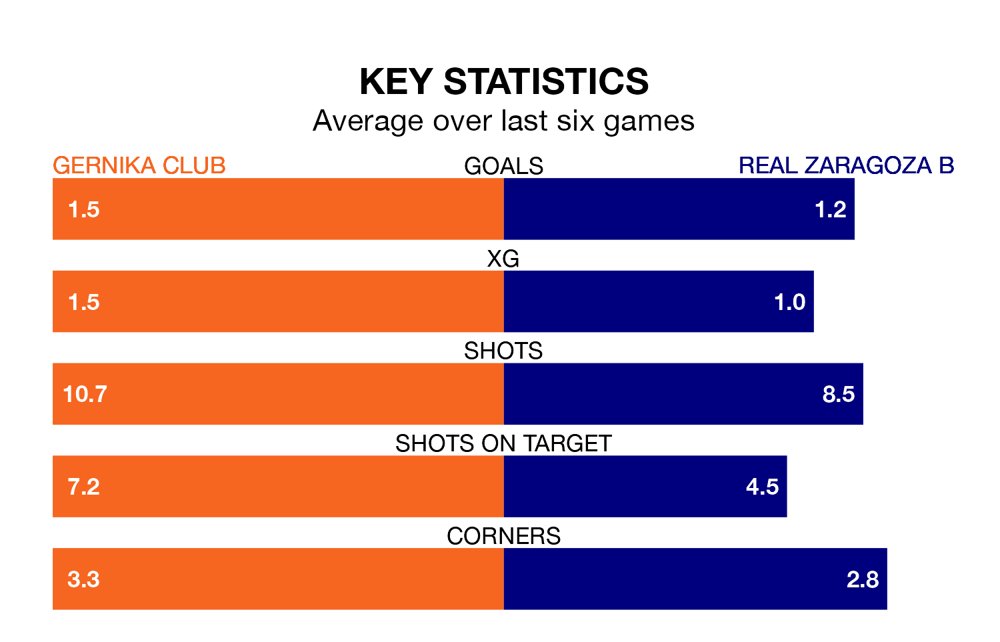

Real Zaragoza B travel to Gernika Club on Sunday in Segunda División RFEF Group 2.
The visitors come into the game on the back of a win in their last match, having beaten Real Sociedad III 3-1 at home.
Gernika Club also won their last match, 2-1 against Deportivo Alaves B.
With 25 goals in 20 games so far this season, Gernika Club are scoring more than average in the league with 1.2 goals per game. But they are conceding more than average too, letting in 30 goals at a rate of 1.5 per game.
Zaragoza B are also above average scorers, with 1.2 goals per game, compared to a league average of 1.1. They have conceded 0.7 goals per game.
The visitors are sixth in the table after 20 games, of which they have won nine and drawn seven, earning 34 points.
The home team are four places behind Zaragoza B in 10th, with six wins and nine draws putting them on 27 points.
Gernika Club are in mixed form in Segunda División RFEF Group 2, with two wins and two draws from their last six games.
With two wins and three draws over that period, Zaragoza B's form is slightly better – they have taken nine points from 18, compared to Gernika Club's eight.
Updated: 13:20 (UTC), 29/01/24